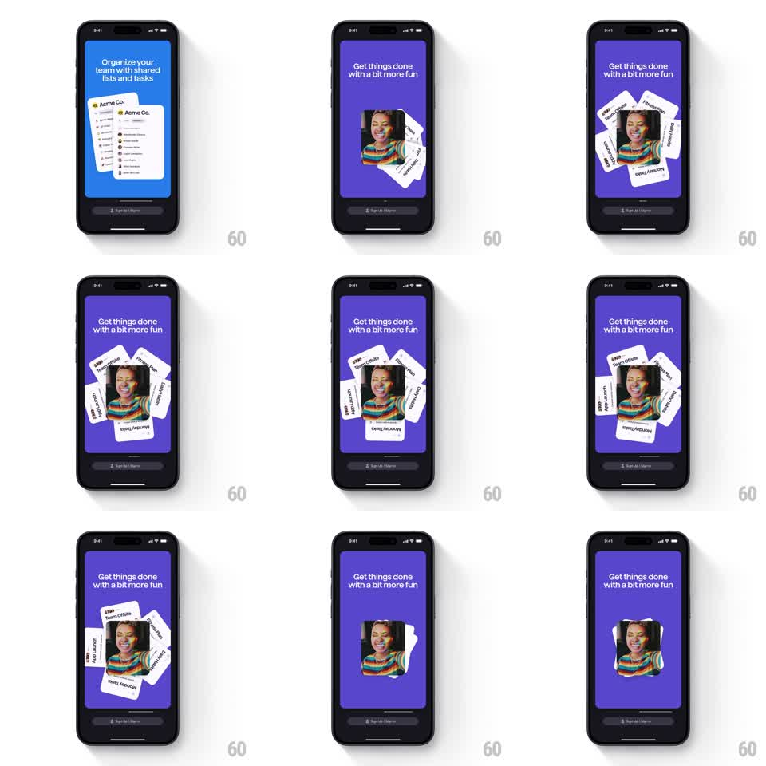

Media
Frame-by-frame

Rebuild this animation 1:1: Superlist's fun onboarding beat - task cards fan out around a central photo, spin a full orbit behind it, then collapse back into a tidy stack.

Rebuild this animation 1:1: Superlist's fun onboarding beat - task cards fan out around a central photo, spin a full orbit behind it, then collapse back into a tidy stack.
## Integration
Integration: stack-agnostic spec - springs given as stiffness/damping, timed motions as duration + curve; map every value to your framework and animation library of choice.
## Scene
Purple panel, headline "Get things done with a bit more fun". Center: a rounded-square photo of a smiling person. Around it, five small white task cards ("Team Offsite", "Product Hunt", "Monday Tasks", "App Launch", "Daily Habit") fan out at angles, orbit the photo, then stack back behind it. Bottom: the dark sign-up bar.
## Motion spec
Pattern: card fan-out, orbit, and restack around a fixed center.
- Cards burst from behind the photo (spring ~280/18, 60ms stagger), landing fanned at +-30deg rotations around the center.
- The fan then orbits: all cards rotate around the photo's center (360deg over ~3s, ease-in-out) while each card keeps its own tilt (counter-rotated so labels stay readable).
- The photo stays fixed and slightly scales with a breathing pulse (1 -> 1.04 -> 1, 2s).
- Cards then collapse back behind the photo in reverse stagger (spring ~300/22), ending as a neat stack peeking from behind the edges.
## Calibration
- The orbit is the showpiece: smooth, continuous, and perfectly circular - no easing stalls mid-loop.
- Cards pass behind the photo (z-order), never over the face.
## Reduced motion
Cards fan out and restack without the orbit.
## Don't miss
- Exactly five cards, evenly spaced; each has a tiny colored dot and its label.
- The photo's rounded corners and shadow stay constant - it is the anchor.